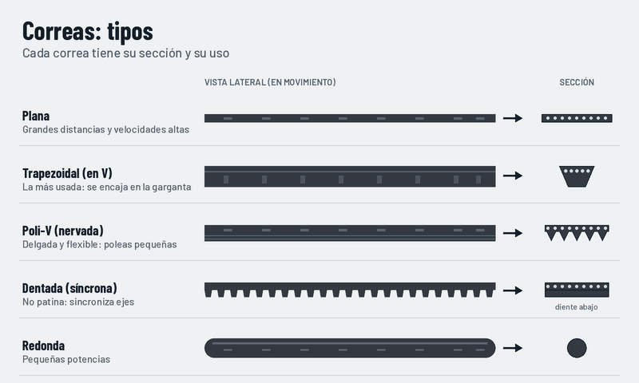

Correas: tipos
La correa es una banda flexible que une dos o más poleas. Según su sección se usa para distintas potencias, velocidades y precisión.

Qué observar
- Las correas lisas transmiten por rozamiento y pueden patinar un poco.
- La dentada no patina: mantiene los ejes sincronizados.
- Por dentro llevan cuerdas de refuerzo (los puntos claros de la sección).
Mantenimiento
- Comprobar la tensión: ni floja (patina) ni demasiado tensa (castiga los rodamientos).
- Revisar grietas, desgaste y brillo en los flancos.
- Cambiar a la vez todas las correas de un mismo juego.
Dónde lo encontramos
- Trapezoidales: compresores, bombas y máquinas herramienta.
- Poli-V: alternador y accesorios del motor del coche.
- Dentadas: distribución de motores, impresoras 3D y CNC.